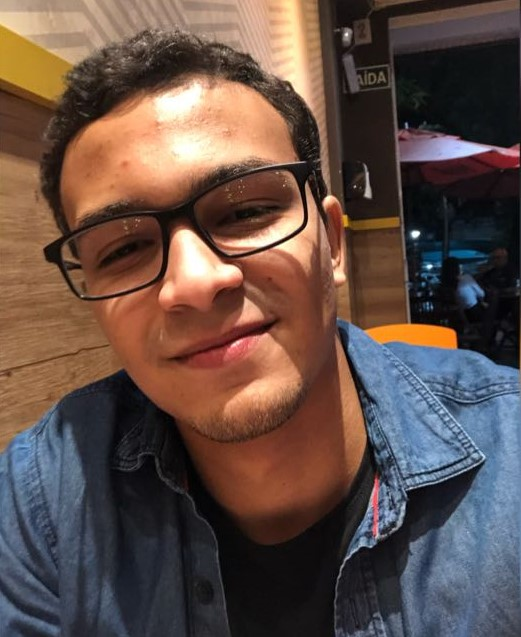

Lucas Nunes

Summary
I'm 23 years old, hardworking and dedicated individual
who is always seeking to learn and develop
professionally and as a person.
Education
Technologist degree in Software analysis and Development - Universidade Vila Velha
Work Experience
-
Software Developer Trainee - Agoratech Systems and Support
06/01/2022 - Present
- Develops applications and systems using .NET and PL/SQL on a daily basis.
- Participates in sprint planning meetings and code reviews with the development team.
- Works collaboratively with the support team to ensure the usability and availability of applications.
-
Software Developer Intern - MainstreamIT
05/01/2022 - 10/31/2022
- Contributed to the development of applications using Python.
- Worked collaboratively with senior team members to fix bugs and improve existing applications.
- Participated in training and coding sessions to enhance software development skills.
Skills
- .NET – Entity Framework / Asp.NET
- Java – Spring Framework / JPA / Hibernate
- PHP – Laravel Framework
- SQL – PL/SQL, MySQL, PostgreSQL, MongoDB
- Git – Code Versioning
- Agile Software Development
- Advanced English (C2 Proficient)
- Team work
- Problem solving
Awards and Certifications
- C# for .NET development – Alura, 2022
- NET basic to advanced & Object Oriented Programming – Alura, 2022
- Introduction to ASP.NET Core – Alura, 2022
- SQL - Alura, 2022
Other